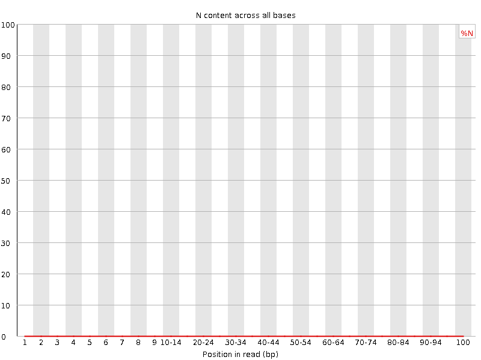

![[OK]](Icons/tick.png) Basic Statistics
Basic Statistics
| Measure | Value |
|---|---|
| Filename | chr22_206583718.simulated.custom.10x100 |
| File type | Conventional base calls |
| Encoding | Illumina 1.5 |
| Total Sequences | 10000 |
| Filtered Sequences | 0 |
| Sequence length | 100 |
| %GC | 44 |
![[FAIL]](Icons/error.png) Per base sequence quality
Per base sequence quality
Per sequence quality scores

Per base sequence content

Per base GC content
Per sequence GC content
Per base N content

Sequence Length Distribution
Sequence Duplication Levels

Overrepresented sequences
No overrepresented sequences
![[WARN]](Icons/warning.png) Kmer Content
Kmer Content
| Sequence | Count | Obs/Exp Overall | Obs/Exp Max | Max Obs/Exp Position |
|---|---|---|---|---|
| AAAAA | 6005 | 3.7472675 | 5.241806 | 95-96 |
| CTGGG | 2390 | 3.6997962 | 6.687498 | 2 |
| CCCAG | 2315 | 3.6436698 | 6.043927 | 3 |
| CCAGG | 2235 | 3.495164 | 6.755753 | 2 |
| TTTTT | 5605 | 3.4333382 | 4.9984016 | 7 |
| CCTCC | 2160 | 3.4090042 | 8.333121 | 6 |
| CCAGC | 1980 | 3.1163998 | 7.554908 | 5 |
| CCTGG | 1995 | 3.1082847 | 5.9828634 | 9 |
| GGAGG | 2005 | 3.0953412 | 4.4461756 | 5 |
| CAGCC | 1940 | 3.0534425 | 6.043927 | 6 |
| GCCTG | 1950 | 3.038173 | 5.0854344 | 45-49 |
| GCTGG | 1850 | 2.863859 | 5.9444427 | 1 |
| CAGGC | 1820 | 2.846174 | 5.254475 | 6 |
| CAGGG | 1760 | 2.734669 | 5.2207317 | 4 |
| TGGGA | 2110 | 2.5877144 | 5.8867435 | 1 |
| CTCCT | 2030 | 2.528783 | 7.1752663 | 3 |
| CAGCA | 2025 | 2.5250323 | 5.386736 | 7 |
| CAGGA | 2035 | 2.5212061 | 5.3521433 | 2 |
| GGCAG | 1580 | 2.4549868 | 5.2207317 | 4 |
| CTGAG | 1910 | 2.3575733 | 5.332312 | 8 |
| GCCTC | 1485 | 2.3286395 | 6.021533 | 1 |
| CTGCC | 1455 | 2.2815964 | 5.2688413 | 7 |
| GAGGC | 1460 | 2.268532 | 5.2207313 | 1 |
| CAGAG | 1730 | 2.143335 | 5.3521433 | 1 |
| GGCTC | 1365 | 2.1267211 | 5.2350054 | 6 |
| TCCAG | 1700 | 2.1119258 | 6.5593934 | 4 |
| GGGCT | 1310 | 2.027922 | 5.201388 | 7 |
| CCCAC | 1280 | 2.0276637 | 5.322617 | 5 |
| AGCCT | 1540 | 1.9131564 | 5.3667765 | 4 |
| CACCC | 1090 | 1.7266822 | 5.3226166 | 7 |
| AGGGC | 1010 | 1.5693269 | 5.2207313 | 4 |
| GCACC | 930 | 1.4637636 | 5.288436 | 6 |
| TGCAC | 1140 | 1.4162327 | 5.3667765 | 5 |